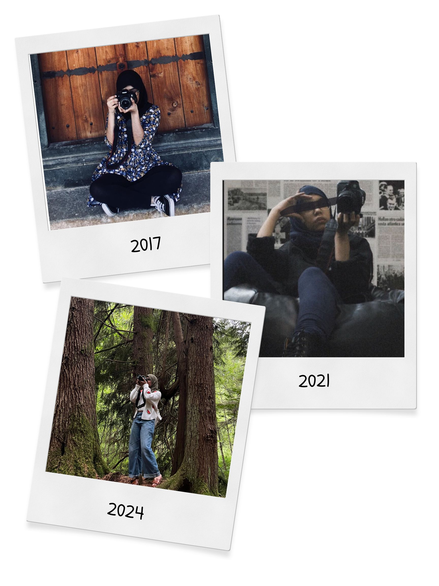

| Home | Gallery |
|---|
|
This year marks a decade since my first camera came into my life - a sugar-coated apology from my mother for making me switch schools against my will. But the real story started long before that, when my father’s old digital camera landed in the hands of a twelve-year-old me. That tiny camera became my ticket to the world of capturing memories: countless pictures of random objects, every person in the house, and a generous dose of self-portraits (yes, I was that kid). It wasn’t long before I became the unsolicited photographer at every family get-together and school event. Eventually, that became unofficially-official, and the title stuck - even as I hopped from country to country. The “go-to photographer” badge followed me everywhere, and honestly, there’s something super comforting about it. These years have brought:
My favorite compliment is when someone tells me they love seeing the world through my eyes - because apparently, I show it better. That’s exactly why, after all these years, I don’t think I’ll ever put this hobby down. |
 |
|---|